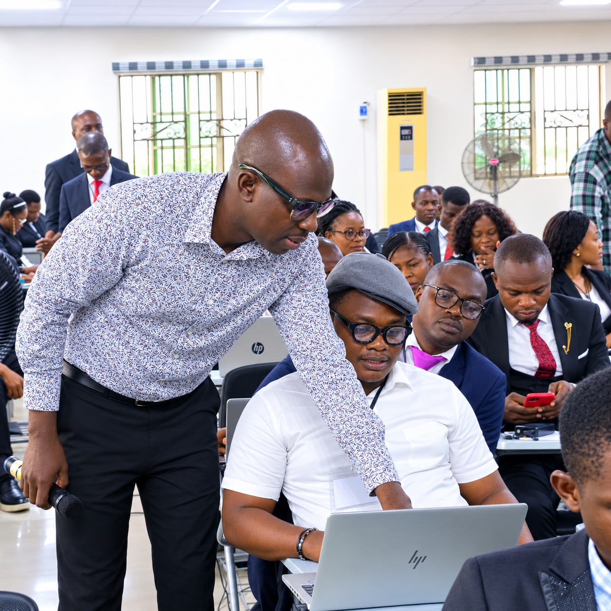
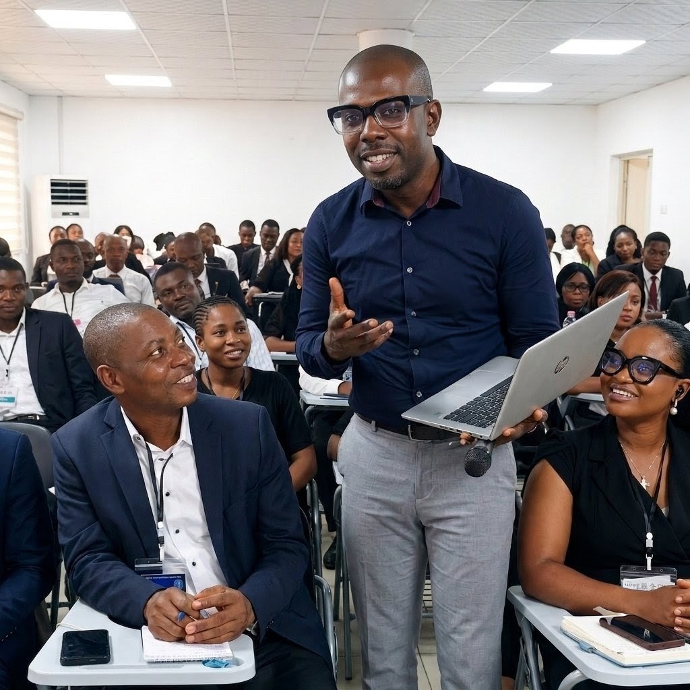

Prompting and platforms
ChatGPT, Claude, Gemini, Microsoft Copilot, Google AI Studio, NotebookLM, Perplexity, Grok and responsible prompt optimisation.
Success story
RCCG Rivers Family Administrators from Regions 33, 5 and 55 participated in an intensive hands-on training designed to equip church leaders with practical AI skills, automation techniques and digital productivity workflows for today's administrative demands.
The challenge
Administrators are expected to produce reports, meeting minutes, circulars, correspondence, presentations, training materials, planning documents, event communications, data summaries and schedules while managing growing workloads with limited time.
The programme showed how artificial intelligence and workflow automation can improve speed, structure and professionalism without weakening human oversight.

Training highlights
Participants experienced guided sessions across writing, research, presentation design, meeting productivity, data work and workflow automation.
ChatGPT, Claude, Gemini, Microsoft Copilot, Google AI Studio, NotebookLM, Perplexity, Grok and responsible prompt optimisation.
AI-assisted minutes, reports, official letters, circulars, policy drafts, email workflows, research and document review.
n8n workflow automation, repeatable processes, AI presentation tools, Canva AI, Gamma, Napkin AI, Otter AI and practical implementation patterns.
Learning experience
Every participant worked directly on practical administrative tasks using laptops under guided facilitation. Facilitators provided one-on-one assistance so participants could translate AI concepts into workplace solutions immediately.

Programme flow
Participants learned prompt engineering, AI-assisted writing, research, summaries, meeting documentation, presentation support and responsible use.
The programme moved into repeatable workflows, n8n automation thinking, data handling, document review and practical church administration use cases.
Participant voice
The training was practical and directly connected to the type of work administrators handle every week.
Participant feedbackRCCG Rivers Family AdministratorsThe one-on-one support made the tools easier to understand and apply immediately.
Participant feedbackAI and automation sessionThis showed how AI can support church administration without replacing human judgment.
Participant feedbackDigital productivity sessionPhoto proof
Book JENECONK training
Whether you are a church, school, business, government agency or non-profit organisation, JENECONK delivers practical AI and automation training tailored to your operational needs.